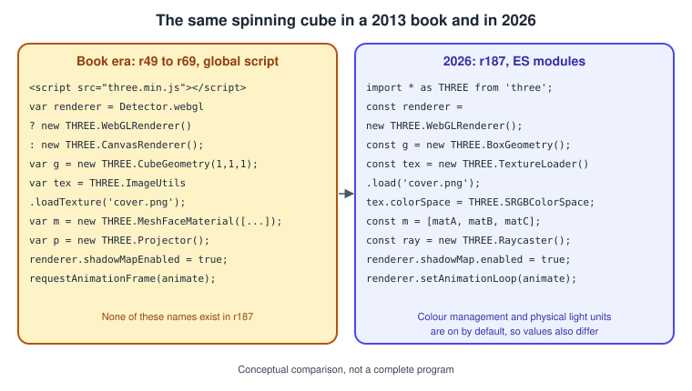
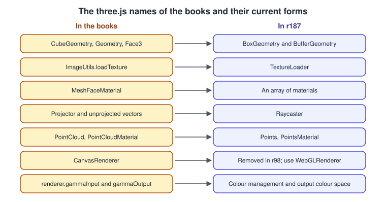
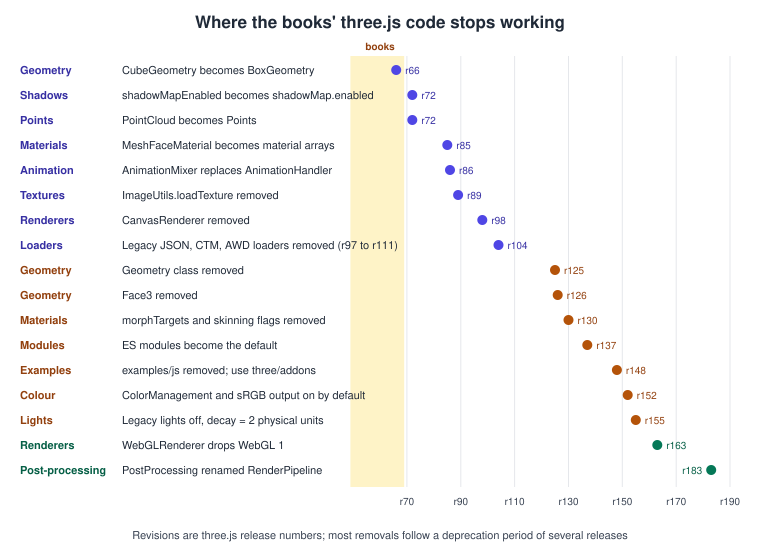
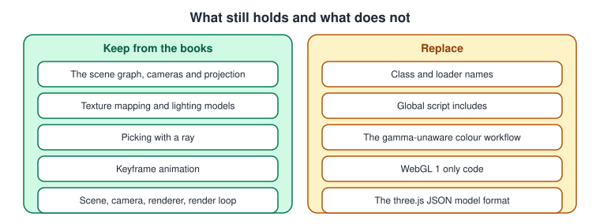

What Has Changed Since the Older WebGL and three.js Guides
|
This content was generated with the assistance of AI and should be verified against the official documentation before being relied on in production. |
The ideas in the three older WebGL books are still sound: a scene graph of objects, cameras that project it, geometry that becomes
buffers, materials and lights that become shaders, textures, picking with a ray, animation as keyframes, and a render loop. What
has changed is almost everything that is typed: class names, loader names, the way a script is included, the colour rules, the
browser support and the format used to bring a model into the page. The books were written for three.js revisions r49 to r69
(2012 to 2015) and for WebGL 1 only; this sub-section documents r187 (npm three@0.187.0, 30 October 2026), WebGL 2 and
WebGPU. This page lists, book by book, the statements that are out of date and what to do today, so that you can keep reading
the books for their explanations and use the pages of this sub-section for current code. The facts were checked in November
2026 against the three.js Migration Guide and release notes, the three.js manual and the WebGL specifications. For the changes
that affect all graphics libraries, not only WebGL, see
What Has Changed Since the Older Guides.
The books are listed in the section bibliography and have the short names used in
the tables: PAR (Tony Parisi, WebGL: Up and Running, 2012), LTJ (Jos Dirksen, Learning Three.js, 2nd edition, 2015) and TCB (Jos
Dirksen, Three.js Cookbook, 2015). Chapter numbers are those of the books. The revision numbers in the Revision column are
three.js release numbers, so r125 is the release that removed the item, and the Migration Guide is the primary source for each.

The left panel is the style of all three books; the right panel is the structure of three.js: Getting Started. None of the names in the left panel exists in r187, and a program copied from a book fails on the first line that uses one of them.
The corrections, book by book
PAR: WebGL: Up and Running (2012)
| Chapters | What the book says | What is current | Revision or date | Read more |
|---|---|---|---|---|
7 |
Internet Explorer has no WebGL, Safari needs a developer toggle and iOS supports WebGL only inside iAd. |
WebGL 2 runs in every evergreen browser (Chrome 56, Firefox 51, Edge 79, Safari and iOS 15), about 97 percent of global usage in November 2026. Internet Explorer is retired. |
2017 and 2021 |
|
1 and 7 |
The context is requested with |
Ask for |
r97 and r107 |
Your First Triangle in WebGL 2, WebGL Versions and Browser Support |
3 |
Geometry is built from |
|
r66, r125 and r126 |
|
5 |
Picking converts the mouse position with |
Convert the pointer to normalised device coordinates and call |
Since the 2010s |
|
7 |
Models are loaded from the three.js JSON format, from COLLADA or from the binary format produced by the Blender exporter. |
Use glTF 2.0 ( |
r97 to r111 |
|
3 |
Shaders are GLSL ES 1.00 with |
WebGL 2 shaders start with |
WebGL 2 (2017) |
GLSL ES 1.00 and 3.00 in WebGL, three.js Custom Shaders (GLSL) |
3 and 8 |
Particle systems are built from the early three.js particle classes and a list of vertices, and sound uses a custom audio helper. |
Use |
r72 for |
|
4 |
Animation is done with Tween.js tweens. |
Tween.js still works for UI-style tweens, but model animation uses |
r86 and r183 |
LTJ: Learning Three.js, 2nd edition (2015)
| Chapters | What the book says | What is current | Revision or date | Read more |
|---|---|---|---|---|
1 |
Development uses the IEWebGL plugin for Internet Explorer and disables the browser’s security checks to open pages from |
Serve the page from a development server such as Vite, or use an import map with any static server. Textures from |
ES modules since r137 |
|
2 to 6 |
|
Only |
r66, r89, r125 and r126 |
|
3 |
|
|
r90, r147 and r155 |
|
3 and 4 |
Shadows are enabled with |
Use |
r72 and r74 |
|
4 |
One object uses several materials through |
Pass an array of materials and give the geometry groups. |
r85 |
|
7 |
|
|
r72 and r98 |
|
8 |
CTM, AWD, Babylon and AssimpJSON loaders import models. |
These loaders were removed. Convert the asset to glTF 2.0. |
r108 to r110 |
|
9 |
|
|
r86 and r129 to r130 |
|
11 |
Post-processing with |
It is still valid with |
|
|
12 |
Physijs, an unmaintained wrapper around Ammo.js and cannon.js, adds physics, and dat.GUI builds control panels. |
Choose a current engine from the physics page of the three.js manual and the general Physics, Audio and Input Basics. The examples bundle lil-gui in place of dat.GUI. |
Since the late 2010s |
TCB: Three.js Cookbook (2015)
| Chapters | What the book says | What is current | Revision or date | Read more |
|---|---|---|---|---|
1 |
Detector.js and the |
Call |
r97 and r107 |
WebGL Versions and Browser Support, three.js: Getting Started |
1, 2 and 7 |
The three.js exporters and loaders for JSON, OBJ with |
Export glTF 2.0 from Blender. For OBJ, |
r97 to r111 |
|
1 and 3 |
Picking uses |
|
r148 |
|
4 |
|
Material arrays, |
r85, r152 and r155 |
three.js Materials and PBR, three.js Textures and Colour Management |
5 |
Custom shader recipes use GLSL ES 1.00 with the built-in |
The recipes still work with |
r163 for WebGL 1 removal |
three.js Custom Shaders (GLSL), three.js WebGPURenderer and TSL |
6 |
|
|
r72 and r183 |
|
7 |
Animation uses |
|
r86 and r129 |
All three books
| What the books say | What is current | Revision or date | Read more |
|---|---|---|---|
Every example is a global |
ES modules: |
r137 and r148 |
|
Colours and lights are defined in a gamma-unaware way and the renderer shows them unchanged. |
The renderer converts from a linear working space to |
r152 |
three.js Textures and Colour Management, Lighting in WebGL Shaders |
Only GLSL ES 1.00 and WebGL 1 exist. |
WebGL 2 with GLSL ES 3.00 is the baseline, |
2017 and r163 |
WebGL Versions and Browser Support, WebGPU: Overview and Comparison with WebGL |
|
|
r66, r125 and r126 |
|
|
|
removed in r89 |
|
Raw WebGL examples need no context-loss handling and no cross-origin rules. |
A context can be lost at any time, and cross-origin images need CORS headers and |
Always |
Context Loss and Robustness, WebGL Security, CORS and Privacy |


A dot far to the right of the shaded area means the book code may still have run for years; a dot inside or near it means it broke quickly. Both groups need the same cure: replace the removed name with the one on the right of the tables above.
What to keep from the books
-
The explanations of the scene graph, of cameras and projection, of texture mapping, of lighting models, of picking with a ray and of keyframe animation remain correct. Only the names of the calls around them have changed.
-
The structure of the book projects (create a scene, a camera and a renderer, add objects, run a render loop) is exactly the structure of three.js: Getting Started.
-
The raw WebGL chapters of PAR still describe the pipeline well; read them together with The WebGL Rendering Pipeline and use WebGL 2 for the code.
-
Where a book and the three.js manual or the Migration Guide disagree, follow the manual and the Migration Guide.

See also
-
WebGL for the sub-section overview and its coverage map.
-
three.js: Getting Started for the old and new API table.
-
three.js WebGPURenderer and TSL for the migration checklist to the WebGPU renderer.
References
-
three.js Migration Guide: https://github.com/mrdoob/three.js/wiki/Migration-Guide
-
three.js releases: https://github.com/mrdoob/three.js/releases
-
three.js manual: https://threejs.org/manual/
-
three.js documentation: https://threejs.org/docs/
-
WebGL 2.0 specification: https://registry.khronos.org/webgl/specs/latest/2.0/
-
Browser support of WebGL 2: https://caniuse.com/webgl2
-
The books listed in the section bibliography